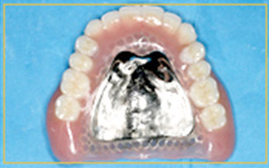

- ホーム
- インプラント
吉川歯科医院のインプラント治療
大阪四ツ橋駅から徒歩2分の吉川歯科医院ではインプラント治療をおこなっております。インプラントは、ブリッジや入れ歯と異なり天然歯のような咬み心地と自然な見た目が特徴です。当院院長は、インプラントについて日夜勉強しており患者様により良いインプラントを提供できるよう研鑽しております。
こちらでは、インプラントと併せて入れ歯、ブリッジをご紹介します。それぞれにメリット・デメリットがありますので、患者様に最適な方法は当院医師とご相談ください。
インプラントとは
インプラントとは、虫歯や歯周病が原因で歯を失ってしまったときに人工的な歯の根っこを埋め、上部に被せ物を製作する治療です。現在では、歯科治療におけるインプラント治療は一般的になってきました。
インプラントの他にも歯を補う治療法として、ブリッジや入れ歯があります。しかし、これらと比較してインプラント治療は天然歯と同様の咬み心地や自然な見た目を得ることができます。さらに、ブリッジのように両隣の歯を削ることや、入れ歯のバネによる歯の摩耗を防ぐことができることも特徴です。
歯を失った場合の治療方法
吉川歯科医院では、歯を失った場合に補綴治療としてインプラント、入れ歯、ブリッジといった治療をご用意しております。
インプラント
-
インプラント治療では、患者様の顎骨にチタン製の人工歯根を埋入します。チタンは、顎骨と強固に結合する金属であることが知られております。
-
メリット 天然歯に近い見た目や咬み心地になる
周囲の歯へ影響を与えない
当日に仮歯が入る
治療期間が短いデメリット（リスク等） 外科処置が必要
自費治療のため、高額な医療費となる
入れ歯
-
入れ歯治療は床（しょう）と人工歯からなる補綴装置です。失った歯の本数に応じて、部分入れ歯か総入れ歯を製作します。部分入れ歯の場合は、金属のバネ（クラスプ）を残っている歯にかけて維持させるため歯に負担がかかることがあります。
患者様の中には、装着時に違和感が生じる方やお口に合わなくなる方がいます。入れ歯をお口にフィットさせるためにも定期的に入れ歯の調整をおこなう必要があります。
-
メリット 保険適用の治療がある デメリット（リスク等） 装着時の違和感がある
残存歯に負荷がかかる
毎日のお手入れや定期的な調整が必要
ブリッジ
-
ブリッジとは、抜けてしまった歯の両隣の歯を土台として、連結した人工歯を橋のようにかける治療法です。土台となる歯を削る必要があるため、周囲の歯に与える影響が大きい治療法ともいえます。
連なった人工歯では、あまり多くの歯を補うことができないため、ブリッジは入れ歯と比較すると適用症例が限られているのが特徴です。ブリッジの材料はセラミックや金属・歯科用プラスチックなどさまざまな種類があります。
-
メリット 保険適用のものなら治療費が安価で済む
外科処置が必要ないデメリット（リスク等） 人工歯の底部が不衛生になりやすい
周囲の歯に与える影響が大きい
吉川歯科医院のインプラント治療の3つの特長
-
01. 豊富な実績
- 当院のこれまでのインプラント治療実績は多数。院長はインプラント治療の研修やセミナーにも積極的に参加し、日々技術を磨いております。
-
02. 充実した設備
- 当院では、患者様に安心してインプラント治療を受けていただくためにさまざまな設備を導入しております。患部を撮影する3D歯科用CT等の設備だけでなく、これからの患者様の体の一部として埋め込む歯の素材も厳しく選ばれたものを使用しております。
-
03. 即時に仮歯を入れることができる
- 当院では、抜歯と同時にインプラントの埋め込み・治療当日に仮歯の装着が可能な「抜歯即時埋入治療」を取り扱っております。高度なテクニックを必要とする治療法です。
通常のインプラントでは、抜糸後十分に治癒期間を設けるため治療期間が2〜6ヶ月かかるといわれています。しかし、治療の当日に仮歯まで装着が完了してしっかり咬めるようになります。本来、治癒期間中は食事などに気をつけなければいけないところですが、抜歯即時埋入治療の治癒期間中には普段通りに食事ができます（あまり硬いものは避けてください）。
検査方法
吉川歯科医院ではインプラント治療の検査において歯科用CTやメディフュージを使用しております。
歯科用CT
歯科用CTは患部を撮影し3Dの断面図を得ることができる機器です。お口構造をより詳しく知ることができるため、インプラント治療の精度を高めることに応用しております。
メディフュージ
メディフュージとは、患者様の血液中から骨再生や治癒促進の働きがある成分を抽出する遠心分離機です。「フィブリンゲル」というゲル状の素材を抽出して、インプラント手術など外科処置の際に使用いたします。フィブリンゲルは、拒絶反応が少ないため安全性の高い治療法として知られています。
吉川歯科医院の6つのインプラントメニュー
-
HAインプラント
HAインプラントとは歯に含まれる代表的な無機質成分であるハイドロキシアパタイト（HA）が含まれた人工歯根のことです。インプラント体の周りに骨を凝集させ癒合することができるため、骨と人工歯根の結合が強固になり、インプラントとしての強度を高めます。従来のインプラント治療と比較して、HAインプラントの方が早く骨と結合します。
Megagen製 AnyRidge
Megagen製 AnyOne
Dentume製 SuperLine -
抜歯即時埋入
抜歯をした当日にインプラントを埋入する治療です。歯ぐきを切開する必要がないため傷口が小さく済みます。また、治療当日に仮歯まで装着できるため普段通りの食生活を送ることができます。
-
インプラントオーバーデンチャー
顎骨に数本のインプラント埋め込み、その上部に総入れ歯を装着する治療法です。少ない本数のインプラントですが入れ歯が動かないためしっかりと咬むことができます。
-
フラップレス
歯ぐきの切開（フラップ）をおこなわないインプラント治療を、フラップレスといいます。インプラントを埋入するために小さな穴を開けるだけなので手術時のダメージを抑えることができます。腫れずに痛みがないのが特長です。
-
ソケットリフト

ソケットリフトは、上顎の骨が足らない場合におこない治療です。インプラントを埋め込む部分へ特殊な器具を入れ、上顎洞底を押し上げます。空いたスペースに骨補填剤を注入し、骨を造成させます。
麻酔について
吉川歯科医院では、インプラントの外科治療において、静脈内鎮静法や局所麻酔を用いております。
静脈内鎮静法
静脈内鎮静法とは、患者様の静脈内に薬剤を注入して患者様の恐怖心や痛みを軽減させる麻酔方法の一つです。患者様の血圧や呼吸などバイタルサインを監視する必要があるため、ある程度の経験や技術が求められます。当院では歯科麻酔科担当のスタッフが麻酔管理をおこないます。
局所麻酔
局所麻酔は、治療をおこなう部分だけにおこなう麻酔です。麻酔液の中には血管収縮薬が含まれているため、手術時の出血を抑えることもできます。
当院には麻酔科担当のスタッフがいます
当院ではインプラント治療をおこなう際に静脈内麻酔をして、患者様がリラックスして治療を受けられるようにしております。そこで、重要となるのが歯科麻酔に精通したスタッフです。当院では、麻酔科に所属して経験を積んできた歯科麻酔科の歯科医師が静脈内麻酔や全身管理を担当しております。
インプラント治療の料金表
-
インプラント手術料(1本) ¥180,000～¥230,000 静脈鎮静法 ¥20,000 採血・骨造り ¥50,000 仮歯 ¥20,000 -
即時荷重加算 ¥30,000 抜歯即時埋入加算 ¥20,000 IPI(即時暫間インプラント) ¥20,000 サイナス・ソケットリフト ¥50,000
※表記価格は税別価格になります。
インプラント治療の症例紹介
症例1
| 年齢 | 30歳 |
|---|---|
| 性別 | 女性 |
| 治療期間 | 2ヶ月 |
| 主訴 | 大変怖がりのため、ずっと歯医者に行っていなかったそうです。 職業柄、人前に立つため歯がないと困るとのことで来院されました。 |
| 治療内容 | 歯牙破折を起こしている歯と15年前に装着したブリッジの箇所に即時荷重・即時プロビジョナルで対応しました。 |
Before
After

症例2
| 年齢 | 69歳 |
|---|---|
| 性別 | 男性 |
| 治療期間 | 7週間 |
| 主訴 | 15年前に保険で入れたブリッジが咬めなくなってきたため来院されました |
| 治療内容 | 残痕状態の歯を抜歯し、インプラントを即時埋入。 オペ当日に仮歯を装着。 7週間後に最終補綴物を入れて治療終了。 |
症例3
| 年齢 | 85歳 |
|---|---|
| 性別 | 男性 |
| 治療期間 | 1日 |
| 主訴 | 10年前に当院でBPS義歯を作り装着していたが、体調が悪くなりなかなか通院できずにおられました。 あらためて来院され、またしっかりと咬める義歯にしたいとのことで来院されました。 |
| 治療内容 | インプラントの埋入。 義歯に負荷をかけ、義歯の安定化を図る。 3か月後に再調整し治療完了。 今では調子よく義歯を使用されています。 |


{kind=link}
{kind=link}
{kind=link}
{kind=link}
{kind=link}
{kind=link}
{kind=link}
{kind=link}
{kind=link}
{kind=link}
{kind=link}
{kind=link}
{kind=link}
症例4
| 年齢 | 69歳 |
|---|---|
| 性別 | 女性 |
| 治療期間 | 1年6ヶ月 |
| 主訴 | 長年義歯を装着していたが、外出時に義歯を着脱して清掃するのが困難なため、固定式を希望され来院されました。 |
| 治療内容 | 義歯による咬合後継の低下の改善後、インプラントの埋入。 |
{kind=link}
{kind=link}
{kind=link}
{kind=link}
{kind=link}
{kind=link}
{kind=link}
{kind=link}
症例1
術前
-

多くの歯が抜けて歯がしみるので、しみ止めの薬を使用。
-
片顎の前歯には義歯を装着。
-
下の歯は治療中で奥は抜いたままの状態。

術後
-
欠損部はインプラントで修復。
-
上顎の残存歯に白いセラミックの被せ物。
-
下顎欠損部はインプラント。残存歯はセラミックの被せ物。
| 年齢 | 70歳 |
|---|---|
| 性別 | 女性 |
| 治療期間 | 1年 |
| 多くの歯が抜け、しっかり咬めない状態です。 術後は義歯なしで硬い食べ物が食べられるようになりました。 |
|
症例2
術前
-
前歯が外れ来院。
金属の被せ物が目立ちます。 -
上顎
-
下顎
術後
-
欠損部はインプラントで金属部はセラミックの被せ物で自然な歯のように仕上がりました。
| 年齢 | 60歳 |
|---|---|
| 性別 | 女性 |
| 治療期間 | 6ヶ月 |
| 前歯がないだけでなく、金属の被せ物も目立つ状態です。 術後は色も質感も本物の歯のように仕上がりました。 |
|
症例3
術前
-

左上の歯を被せていた箇所が、虫歯で歯牙破折で抜歯となりました。
術後
-
インプラント埋入、3ヶ月で最終の歯が入りました。
| 歯牙破折によって上下の歯でしっかり咬めない状態です。 術後は強く咬める奥歯がよみがえりました。 |
症例4
術前
術後
| 症例3と同じ患者様です。抜歯後にインプラントを埋入し、2ヶ月で最終の歯が入りました。 |
症例5
術前
術後
| 治療期間 | 1年5ヶ月 |
|---|---|
| （術前）歯医者嫌いな患者様で、前歯がぐらつき食べられないとのことで来院。上顎はインプラントで固定式に。下顎臼歯部は骨吸収が大きく、神経に近ずいしているので義歯で対応しました。4番に2本インプラントを埋入し金具無しの義歯を装着しました。 （術後）上下とも白くてきれいな歯が入りました。 |
|
症例6
術前
-
上顎は骨隆起が左右突出して、義歯が安定不良となっていました。
-
2本のインプラントを左右に埋入。Oリングアタッチメントを装着しました。
-

インプラントオーバーデンチャー装着前
-

術中：インプラント埋入後のパノラマ写真
術後
-
インプラントオーバーデンチャー装着後
-

| 年齢 | 85歳 |
|---|---|
| 性別 | 男性 |
症例7
術前
-
重度の歯槽膿漏で咬めないが、義歯は入れたくないとご要望でした。
-
下顎前歯も動揺が強く固定が必要です。
術後
-
欠損部はインプラント、下顎前肢はジルコニアブリッジで歯を被せました。
-
臼歯部はインプラントを埋入し、仮歯を半年入れて最後にジルコニアを装着しました。